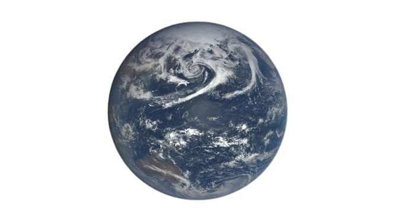

EMIT'in bilim hedefleri özellikle minerallere bağlı olarak değişen ısınma ve soğuma etkisini anlamaya odaklı. 1) Dünya atmosferindeki mineral tozunun ısıtma ve soğutma etkilerine ilişkin yeni ve geliştirilmiş bir değerlendirme sunmaktır. 2) Dünya atmosferine yayılan mineral tozlarının türünün ve miktarının gelecekteki iklim senaryolarına bağlı olarak nasıl değişebileceğini tahmin etmektir. Amaç ve hedeflere örnek vermek gerekirse: 3) 50 derece kuzey ve güney enlemleri kurak bölgelerin hematit, götit, illit, vernikülit, karsit, dolomit, krolit, alçı taşı gibi yüzey minerallerinin miktarına ilişkin uzaktan algılama sistemi geliştirmektir. EMIT'in asıl amacı bu ilk iki hedefe ulaşmak olsa da misyon aynı zamanda EMIT'in ölçümlerinin mümkün kılacakları ek bilim ve uygulamalar için de kullanılabilir olmasını sağlamaya kararlıdır.
